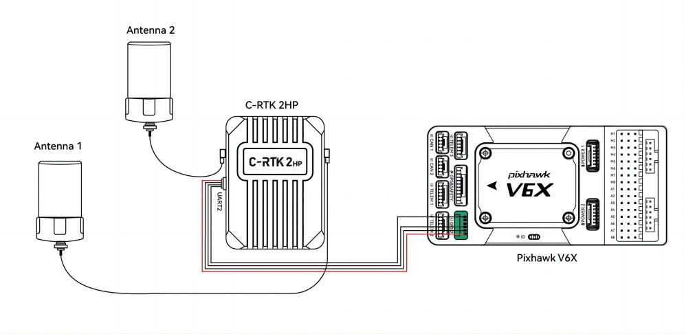

C-RTK2 HP Heading and RTK Module¶
C-RTK2 HP is a heading and RTK receiver designed and manufactured by CUAV. The difference from F9P is that it only needs one module to realize GPS for yaw. C-RTK2 HP also supports UART and Dronecan connection methods.
{kind=link}
Features¶
Full constellation, multi-frequency GNSS satellite receiver
Single module, dual antenna heading and positioning system
RM3100 industrial grade Magnetometer (for safety redundancy)
Safe and reliable DroneCAN protocol or standard UART serial interface
Automatic switching between USB and UART
ArduPilot AP Periph Open Source Firmware
Key Features¶
MCU |
STM32F4 |
Sensors |
Compass:RM3100 |
Receiver |
UM982 High precision GNSS SOC |
GNSS |
BDS/GPS/GLONASS/Galileo/QZSS |
Frequency Bands(Master) |
BDS:B1I/B2I/B3I, GPS:L1(C/A)/L2(P/C)/L5, GLONASS:L1/L2, Galileo: E1/E5a/E5b, QZSS:L1/L2/L5 |
Frequency Bands(Slave) |
BDS:B1I/B2I/B3I, GPS:L1(C/A)/L2(P/C)/L5, GLONASS:L1/L2, Galileo: E1/E5a/E5b, QZSS:L1/L2 |
Position accuracy(RMS) |
3DGPS： 1.5m (Horizontal, 2.5m（Vertical), DGPS： 0.4m +1PPM（Horizontal), 0.8m+1PPM（Vertical), RTK: 0.8cm +1PPM（Horizontal), 1.5cm+1PPM（Vertical） |
Heading accuracy (RMS) |
0.1° using 1m baseline（Distance from Antenna 1 to Antenna 2） |
Acquisition |
Cold starts<30S, Initialization time<5s |
Data update rate |
UP to 20hz(default:5hz) |
Differential data |
RTCM3.X |
Data protocol |
Dronecan/NMEA |
Connectors |
Master Antenna, Slave Antenna、CAN、UART、DSU、USB |
Operating Voltage |
4.7~5.2V |
Operating temperature |
-20~85℃ |
Size |
50*37*17mm |
Weigh |
40g |
Purchase¶
Pinouts¶

Hardware connection and ArduPilot Setup¶
C-RTK2 HP supports connection either via serial or DroneCAN port to the autopilot.
DroneCAN¶
The diagram below shows the C-RTK2-HP being connected via its CAN port to an autopilot’s CAN port.
setup the autopilot’s CAN port parameters for DroneCAN: DroneCAN Setup
GPS_TYPE = 9 (DroneCAN GPS)

Serial¶
The diagram below shows the C-RTK2 HP being connected via its UART2 port to an autopilot’s serial port setup for GPS Protocol.
{kind=link}
set the autopilot’s
SERIALx_PROTOCOL= ‘5’ (be sure any lower numbered port does not use this protocol unless a GPS is attached)GPS_TYPE = 25 (UnicoreMovingBaseline)
Note
this unit can be used with only its “Master” antenna connected, if desired, but no yaw information should be used. In this case set GPS_TYPE = 24 (UnicoreMaster)
Common Setup¶
for either connection method, set:
EK3_SRC1_YAW = 2 (“GPS”) or 3 (“GPS with Compass Fallback”) if a compass(es) is also in the system.
Note
C-RTK2 HP provides an RM3100 magnetometer for use as Compass Fallback
Be sure to setup the offset parameters for the antennas, see: Antenna Offsets